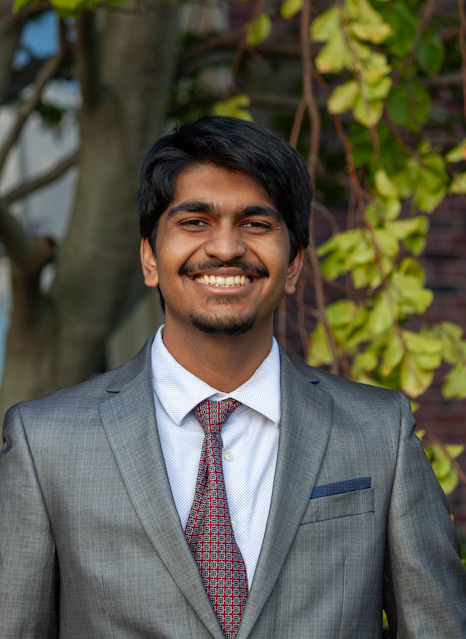
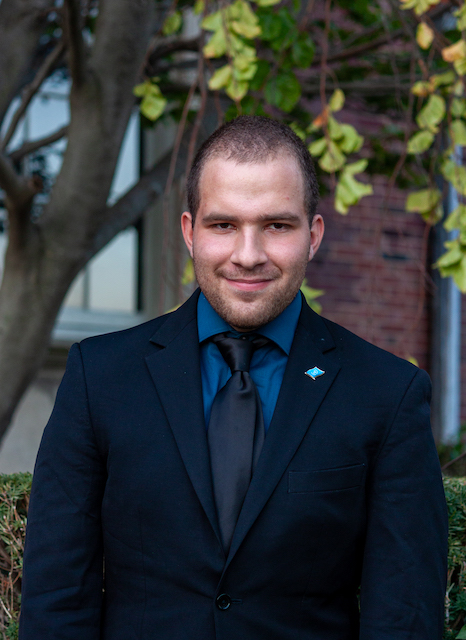
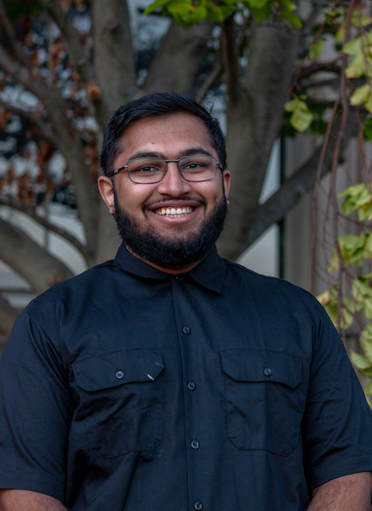
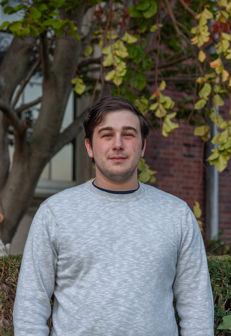
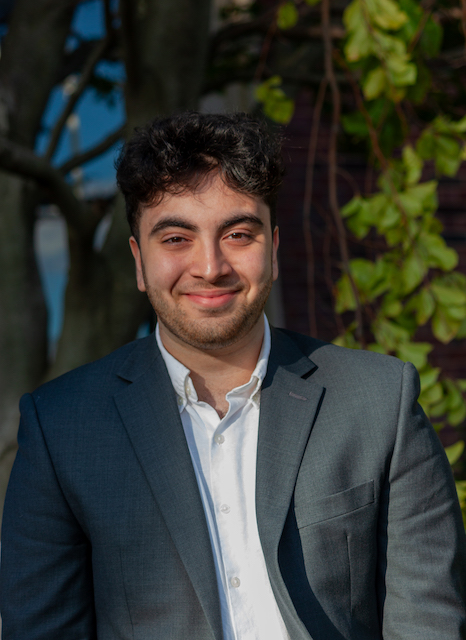
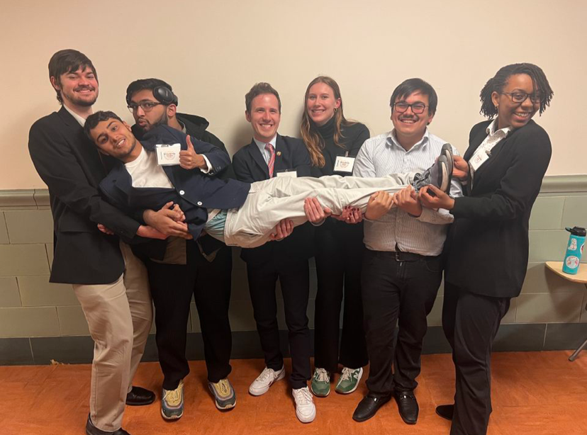

You are viewing an archive page of MUNI XXVI. Click here to go to the current website.

We are Illinois MUN.
Secretariat

Keon Sung
Secretary-General | LAS '24
I am a senior majoring in political science and philosophy. I have previously served as the Under-Secretary-General of Logistics for MUNI XXV and am excited this year to be continuing this conference as the Secretary-General! I am from Palatine, Illinois, and have been participating in Model UN since my freshman year of high school. During my eight years of involvement, I have been a part of all aspects of the competition, from competing as a delegate, to now staging that competition for others. In my final year, I hope to culminate my time in MUN by providing a memorable experience for delegates in the midst of their own MUN journey.

Adithya Vuruputoor
USG of Logistics | LAS '25
I'm Adithya Vuruputoor, a Junior majoring in Econometrics and Quantitative Economics with a minor in Business. I proudly serve as the Fundraising Chair of Illinois Model United Nations and Under-Secretary-General of Logistics for MUNI XXVI. My journey with Model United Nations began in the seventh grade, and I have been vigorously involved ever since. I previously served as a logistics staffer in MUNI XXV and staffed the backroom for the French Revolution Committee. I have also competed at AMUN, ChoMUN, and BarMUN in committees, which include the 1994 MLB Strike and Apple Board of Directors.
In my leisure time, I play grand strategy games, read historical non-fiction, and love spending time outdoors. Beyond my roles in IMUN, I am an active member of the Illinois Data Science Club and the Economics Club at UIUC student organizations. I've enjoyed my time with IMUN and have made lifelong friends and valuable connections. I am excited to see you all this Spring and wish you the best of luck at MUNI XXVI!

Ethan Cooper
USG of Registration | LAS '24
Hi, I’m Ethan Cooper, a senior double majoring in Political Science and History! I have spent 7 years in Model UN. In which I have chaired diverse committees such as the Treaty of Versailles and OAS. Most recently I directed a committee simulating NATO in response to the ongoing War in Ukraine at MUNI XXV. I also served as UIUC's head delegate to AMUN 2022 and MUNE XII.
Outside of Model UN, I spend most of my time lobbying the University to adopt a new mascot: the Belted Kingfisher and sword fighting in Belegarth. Furthermore, I am also a member of the history honor society Phi Alpha Theta and Illinois’ Political Science Climate Committee. Separately, I am writing two honors theses for Political Science and History.

Deen Syed
USG of Committees | LAS '24
Hey everyone, how’s it going? My name is Deen Syed and it’s very nice to meet all of you. I am a third year student that hails from the great city of Chicago and I am majoring in Political Science and minoring in Religion at the College of Liberal Arts and Sciences. Though I am a junior, I plan on graduating this year and that means that this will be my last time staffing MUNI.
As Under-Secretary-General of Committees, I plan on making this year’s committees as enjoyable and rewarding as ever. Model United Nations has been one of my most treasured experiences from my college years and I know that this conference will be bittersweet. My main objective is to make MUNI XXVI a conference that you will look back on fondly as you continue your MUN journey through the rest of high school, university, and beyond. The entire team here at the University of Illinois is working very hard to help accomplish that goal and we can’t wait to see all of you in April!

Daniel Reisner
USG of Rules and Procedures | LAS '24
Hello, I'm Daniel Reisner, a Political Science major with a concentration in Interational Relations and a minor in modern European History. This is currently my seventh year of having participated in Model UN, having attended conferences like NUMUN, MUNUC, and NHSMUN in the past. This is also my second year helping host MUNI, as last year I was director of the French Revolution crisis committee. This year, I will be moving up to the role of USG of Rules and Procedures.
I am originally from Northbrook, IL, and besides Model UN, I'm active in a lot of other groups, including UIUC's swordfighting club. Otherwise, you can find me playing video games, watching old movies, or cooking something new. In terms of political experiences, I have worked with the Jewish Federations of North America and the American Society for Reproductive Medicine as a policy intern, and have worked on a few elections campaigns in the state of Illinois.
Nafisa Khan
USG of Design and Merchandise | LAS '26
Hi everyone! My name is Nafisa Khan and I’m currently a sophomore majoring in Political Science and Economics. I’ll be graduating from the College of LAS in May 2026! Last year, I served as political officer for MUNI XXV’s UN Development Programme. This year, apart from working as your USG of Design and Merchandise for MUNI XXVI, I’m also serving on the IMUN executive board as the club secretary.
Outside of MUN, you can find me writing periphrastic fantasy novels, listening to kpop and bollywood music, trying new recipes, or making really detailed homework schedules that I usually abandon. I’m also involved in social science research programs here on campus, as well as the creative writing club and AAA! I can’t wait to meet all of you and show y’all the exciting merch we have in store for MUNI XXVI! See you all this April!

Shivam Syal
USG of Tech Operations | LAS '25
Hey everyone, I’m Shivam Syal, a sophomore studying Computer Science and Statistics here at U of I! I have previously served as the Chair of the UN Development Programme at MUNI XXV and am super excited to be continuing in a staff position as this year’s USG of Tech Operations. Throughout my eight years of participation within the Northeastern and Midwest MUN Circuits, I’ve made extremely valuable connections and friendships and I hope you all will as well throughout MUNI XXVI.
Outside of Model UN, I’m a member of numerous entrepreneurship societies and organizations, and am in the pre-seed stages of a startup I founded with a couple of friends! I’m also a tour guide on campus so yes I know every single building on campus, even the ones no one ever uses. I’m really excited to meet you all this April!

UN Development Programme [MUNI XXV]

Director Shenanigans

NATO/OTAN [MUNI XXV]